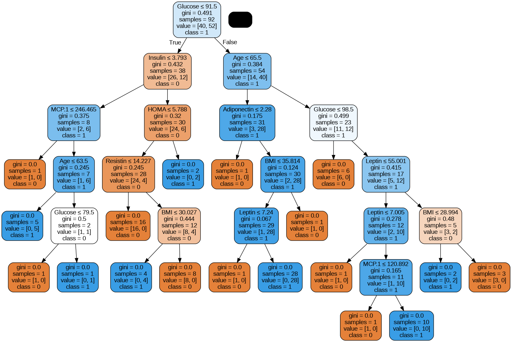
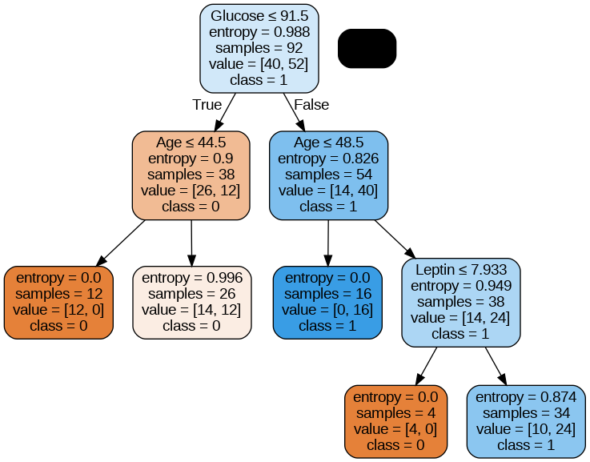

ANALISA DATA MENGGUNAKAN KNN DAN DECISION TREE (UTS)
Contents
ANALISA DATA MENGGUNAKAN KNN DAN DECISION TREE (UTS)#
KNN#
import pandas as pd
dataset_url = "https://raw.githubusercontent.com/CAHYANIR/data/main/dataR2.csv"
df = pd.read_csv(dataset_url)
df.head()
| Age | BMI | Glucose | Insulin | HOMA | Leptin | Adiponectin | Resistin | MCP.1 | Classification | |
|---|---|---|---|---|---|---|---|---|---|---|
| 0 | 48 | 23.500000 | 70 | 2.707 | 0.467409 | 8.8071 | 9.702400 | 7.99585 | 417.114 | 1 |
| 1 | 83 | 20.690495 | 92 | 3.115 | 0.706897 | 8.8438 | 5.429285 | 4.06405 | 468.786 | 1 |
| 2 | 82 | 23.124670 | 91 | 4.498 | 1.009651 | 17.9393 | 22.432040 | 9.27715 | 554.697 | 1 |
| 3 | 68 | 21.367521 | 77 | 3.226 | 0.612725 | 9.8827 | 7.169560 | 12.76600 | 928.220 | 1 |
| 4 | 86 | 21.111111 | 92 | 3.549 | 0.805386 | 6.6994 | 4.819240 | 10.57635 | 773.920 | 1 |
df.shape
(116, 10)
X = df.drop(columns=['Classification'])
X.head()
| Age | BMI | Glucose | Insulin | HOMA | Leptin | Adiponectin | Resistin | MCP.1 | |
|---|---|---|---|---|---|---|---|---|---|
| 0 | 48 | 23.500000 | 70 | 2.707 | 0.467409 | 8.8071 | 9.702400 | 7.99585 | 417.114 |
| 1 | 83 | 20.690495 | 92 | 3.115 | 0.706897 | 8.8438 | 5.429285 | 4.06405 | 468.786 |
| 2 | 82 | 23.124670 | 91 | 4.498 | 1.009651 | 17.9393 | 22.432040 | 9.27715 | 554.697 |
| 3 | 68 | 21.367521 | 77 | 3.226 | 0.612725 | 9.8827 | 7.169560 | 12.76600 | 928.220 |
| 4 | 86 | 21.111111 | 92 | 3.549 | 0.805386 | 6.6994 | 4.819240 | 10.57635 | 773.920 |
y = df['Classification'].values
y[0:5]
array([1, 1, 1, 1, 1])
from sklearn.model_selection import train_test_split
X_train, X_test, y_train, y_test = train_test_split(X, y, test_size=0.2, random_state=1, stratify=y)
from sklearn.neighbors import KNeighborsClassifier
knn = KNeighborsClassifier(n_neighbors = 3)
knn.fit(X_train,y_train)
KNeighborsClassifier(n_neighbors=3)
knn.predict(X_test)[0:29]
array([1, 2, 1, 2, 2, 1, 2, 1, 2, 2, 2, 1, 1, 1, 1, 2, 2, 2, 1, 2, 2, 2,
2, 2])
knn.score(X_test, y_test)
0.3333333333333333
from sklearn.model_selection import cross_val_score
import numpy as np
knn_cv = KNeighborsClassifier(n_neighbors=3)
cv_scores = cross_val_score(knn_cv, X, y, cv=5)
print(cv_scores)
print('cv_scores mean:{}'.format(np.mean(cv_scores)))
[0.5 0.52173913 0.47826087 0.47826087 0.60869565]
cv_scores mean:0.5173913043478261
from sklearn.model_selection import GridSearchCV
knn2 = KNeighborsClassifier()
param_grid = {'n_neighbors': np.arange(1, 25)}
knn_gscv = GridSearchCV(knn2, param_grid, cv=5)
knn_gscv.fit(X, y)
GridSearchCV(cv=5, estimator=KNeighborsClassifier(),
param_grid={'n_neighbors': array([ 1, 2, 3, 4, 5, 6, 7, 8, 9, 10, 11, 12, 13, 14, 15, 16, 17,
18, 19, 20, 21, 22, 23, 24])})
knn_gscv.best_params_
{'n_neighbors': 23}
knn_gscv.best_score_
0.5688405797101449
#DECISION TREE
import pandas as pd
import matplotlib.pyplot as plt
import numpy as np
from sklearn.tree import DecisionTreeClassifier
from sklearn.model_selection import train_test_split
from sklearn import metrics
from sklearn.metrics import classification_report
from sklearn import preprocessing
from sklearn import utils
df = pd.read_csv("dataR2.csv")
df
| Age | BMI | Glucose | Insulin | HOMA | Leptin | Adiponectin | Resistin | MCP.1 | Classification | |
|---|---|---|---|---|---|---|---|---|---|---|
| 0 | 48 | 23.500000 | 70 | 2.707 | 0.467409 | 8.8071 | 9.702400 | 7.99585 | 417.114 | 1 |
| 1 | 83 | 20.690495 | 92 | 3.115 | 0.706897 | 8.8438 | 5.429285 | 4.06405 | 468.786 | 1 |
| 2 | 82 | 23.124670 | 91 | 4.498 | 1.009651 | 17.9393 | 22.432040 | 9.27715 | 554.697 | 1 |
| 3 | 68 | 21.367521 | 77 | 3.226 | 0.612725 | 9.8827 | 7.169560 | 12.76600 | 928.220 | 1 |
| 4 | 86 | 21.111111 | 92 | 3.549 | 0.805386 | 6.6994 | 4.819240 | 10.57635 | 773.920 | 1 |
| ... | ... | ... | ... | ... | ... | ... | ... | ... | ... | ... |
| 111 | 45 | 26.850000 | 92 | 3.330 | 0.755688 | 54.6800 | 12.100000 | 10.96000 | 268.230 | 2 |
| 112 | 62 | 26.840000 | 100 | 4.530 | 1.117400 | 12.4500 | 21.420000 | 7.32000 | 330.160 | 2 |
| 113 | 65 | 32.050000 | 97 | 5.730 | 1.370998 | 61.4800 | 22.540000 | 10.33000 | 314.050 | 2 |
| 114 | 72 | 25.590000 | 82 | 2.820 | 0.570392 | 24.9600 | 33.750000 | 3.27000 | 392.460 | 2 |
| 115 | 86 | 27.180000 | 138 | 19.910 | 6.777364 | 90.2800 | 14.110000 | 4.35000 | 90.090 | 2 |
116 rows × 10 columns
df.corr()
| Age | BMI | Glucose | Insulin | HOMA | Leptin | Adiponectin | Resistin | MCP.1 | Classification | |
|---|---|---|---|---|---|---|---|---|---|---|
| Age | 1.000000 | 0.008530 | 0.230106 | 0.032495 | 0.127033 | 0.102626 | -0.219813 | 0.002742 | 0.013462 | -0.043555 |
| BMI | 0.008530 | 1.000000 | 0.138845 | 0.145295 | 0.114480 | 0.569593 | -0.302735 | 0.195350 | 0.224038 | -0.132586 |
| Glucose | 0.230106 | 0.138845 | 1.000000 | 0.504653 | 0.696212 | 0.305080 | -0.122121 | 0.291327 | 0.264879 | 0.384315 |
| Insulin | 0.032495 | 0.145295 | 0.504653 | 1.000000 | 0.932198 | 0.301462 | -0.031296 | 0.146731 | 0.174356 | 0.276804 |
| HOMA | 0.127033 | 0.114480 | 0.696212 | 0.932198 | 1.000000 | 0.327210 | -0.056337 | 0.231101 | 0.259529 | 0.284012 |
| Leptin | 0.102626 | 0.569593 | 0.305080 | 0.301462 | 0.327210 | 1.000000 | -0.095389 | 0.256234 | 0.014009 | -0.001078 |
| Adiponectin | -0.219813 | -0.302735 | -0.122121 | -0.031296 | -0.056337 | -0.095389 | 1.000000 | -0.252363 | -0.200694 | -0.019490 |
| Resistin | 0.002742 | 0.195350 | 0.291327 | 0.146731 | 0.231101 | 0.256234 | -0.252363 | 1.000000 | 0.366474 | 0.227310 |
| MCP.1 | 0.013462 | 0.224038 | 0.264879 | 0.174356 | 0.259529 | 0.014009 | -0.200694 | 0.366474 | 1.000000 | 0.091381 |
| Classification | -0.043555 | -0.132586 | 0.384315 | 0.276804 | 0.284012 | -0.001078 | -0.019490 | 0.227310 | 0.091381 | 1.000000 |
X = df.iloc[:,0:9].values
Y = df.iloc[:, 9].values
print(X.shape, '\n')
print(Y.shape)
(116, 9)
(116,)
X_train, X_test, Y_train, Y_test = train_test_split(X, Y, test_size=0.2, random_state=42)
lab = preprocessing.LabelEncoder()
y_transformed = lab. fit_transform(y)
# Model dengan hyperparameter default
model_default = DecisionTreeClassifier()
model_default = model_default.fit(X_train, Y_train)
# Model dengan tuning hyperparameter
model_DT = DecisionTreeClassifier(criterion='entropy', max_depth=4, max_leaf_nodes=5, random_state=25)
model_DT = model_DT.fit(X_train, Y_train)
# hasil prediksi training set
y_pred_train = model_DT.predict(X_train)
# hasil prediksi test set
y_pred = model_DT.predict(X_test)
# Train set score
print("Train Accuracy :", metrics.accuracy_score(Y_train, y_pred_train))
print("Train Precission :", metrics.precision_score(Y_train, y_pred_train))
print("Train Recall :", metrics.recall_score(Y_train, y_pred_train), '\n')
# Test set score
print("Test Accuracy :", metrics.accuracy_score(Y_test, y_pred))
print("Test Precission :", metrics.precision_score(Y_test, y_pred))
print("Test Recall :", metrics.recall_score(Y_test, y_pred))
Train Accuracy : 0.7608695652173914
Train Precission : 0.7142857142857143
Train Recall : 0.75
Test Accuracy : 0.7916666666666666
Test Precission : 0.7692307692307693
Test Recall : 0.8333333333333334
# hasil prediksi training set
y_pred_train = model_DT.predict(X_train)
# hasil prediksi test set
y_pred = model_DT.predict(X_test)
# Train set score
print("Train Accuracy :", metrics.accuracy_score(Y_train, y_pred_train))
print("Train Precission :", metrics.precision_score(Y_train, y_pred_train))
print("Train Recall :", metrics.recall_score(Y_train, y_pred_train), '\n')
# Test set score
print("Test Accuracy :", metrics.accuracy_score(Y_test, y_pred))
print("Test Precission :", metrics.precision_score(Y_test, y_pred))
print("Test Recall :", metrics.recall_score(Y_test, y_pred))
Train Accuracy : 0.7608695652173914
Train Precission : 0.7142857142857143
Train Recall : 0.75
Test Accuracy : 0.7916666666666666
Test Precission : 0.7692307692307693
Test Recall : 0.8333333333333334
from sklearn.tree import export_graphviz
from six import StringIO
from IPython.display import Image
import pydotplus
feature_cols = ['Age','BMI','Glucose','Insulin','HOMA','Leptin','Adiponectin','Resistin','MCP.1']
dot_data = StringIO()
export_graphviz(model_default,
out_file=dot_data,
filled=True,
rounded=True,
special_characters=True,
feature_names = feature_cols,
class_names=['0','1'])
graph = pydotplus.graph_from_dot_data(dot_data.getvalue())
graph.write_png('tree_model_default.png')
Image(graph.create_png())

from sklearn.tree import export_graphviz
from six import StringIO
from IPython.display import Image
import pydotplus
feature_cols = ['Age','BMI','Glucose','Insulin','HOMA','Leptin','Adiponectin','Resistin','MCP.1']
dot_data = StringIO()
export_graphviz(model_DT,
out_file=dot_data,
filled=True,
rounded=True,
special_characters=True,
feature_names = feature_cols,
class_names=['0','1'])
graph = pydotplus.graph_from_dot_data(dot_data.getvalue())
graph.write_png('tree_model_DT.png')
Image(graph.create_png())

# Prediksi data baru menggunakan model dengan tuning hyperparameter
# Input data baru
Age=float(input("Umur : "))
BMI=float(input("BMI : "))
Glucose=float(input("Glucoce : "))
Insulin=float(input("Insulin : "))
HOMA=float(input("Homa : "))
Leptin=float(input("Leptin : "))
Adiponectin=float(input("Adiponectin : "))
Resistin=float(input("Resistin : "))
MCP5=float(input("MCP.1 : "))
data_baru = [[Age,BMI,Glucose,Insulin,HOMA,Leptin,Adiponectin,Resistin,MCP]]
# Memprediksi data baru
hasil_prediksi = model_DT.predict(data_baru)
hasil_prediksi = int(hasil_prediksi)
# Cetak hasil prediksi
if hasil_prediksi >= 100:
print('\nTidak berpotensi menderita diabetes!')
else:
print('\nBerpotensi menderita diabetes!')
StdinNotImplementedErrorTraceback (most recent call last)
<ipython-input-24-1a0b4114caca> in <module>
2
3 # Input data baru
----> 4 Age=float(input("Umur : "))
5 BMI=float(input("BMI : "))
6 Glucose=float(input("Glucoce : "))
/usr/local/lib/python3.7/dist-packages/ipykernel/kernelbase.py in raw_input(self, prompt)
856 if not self._allow_stdin:
857 raise StdinNotImplementedError(
--> 858 "raw_input was called, but this frontend does not support input requests."
859 )
860 return self._input_request(str(prompt),
StdinNotImplementedError: raw_input was called, but this frontend does not support input requests.